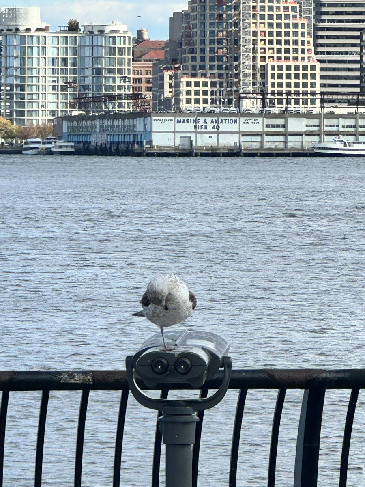
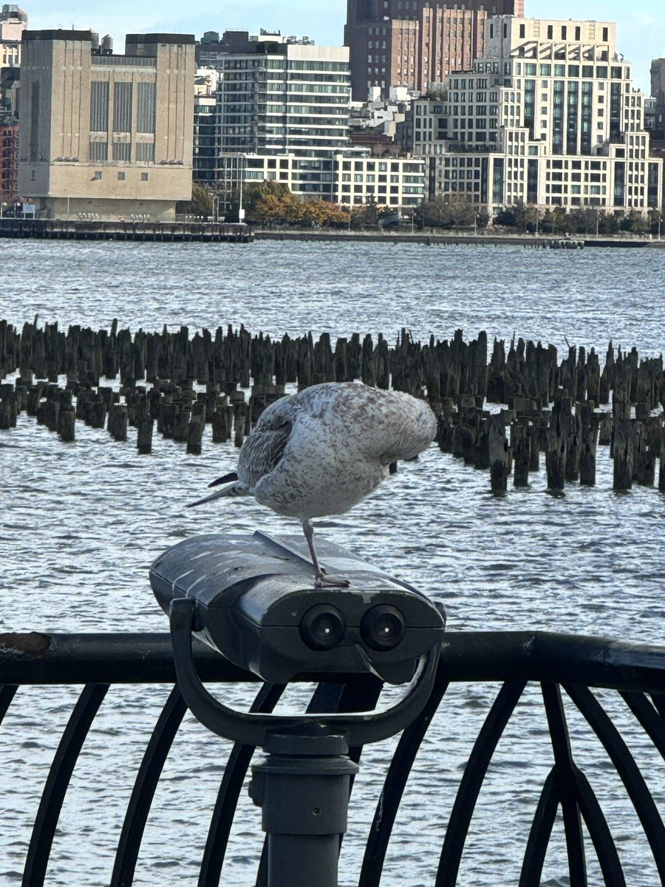
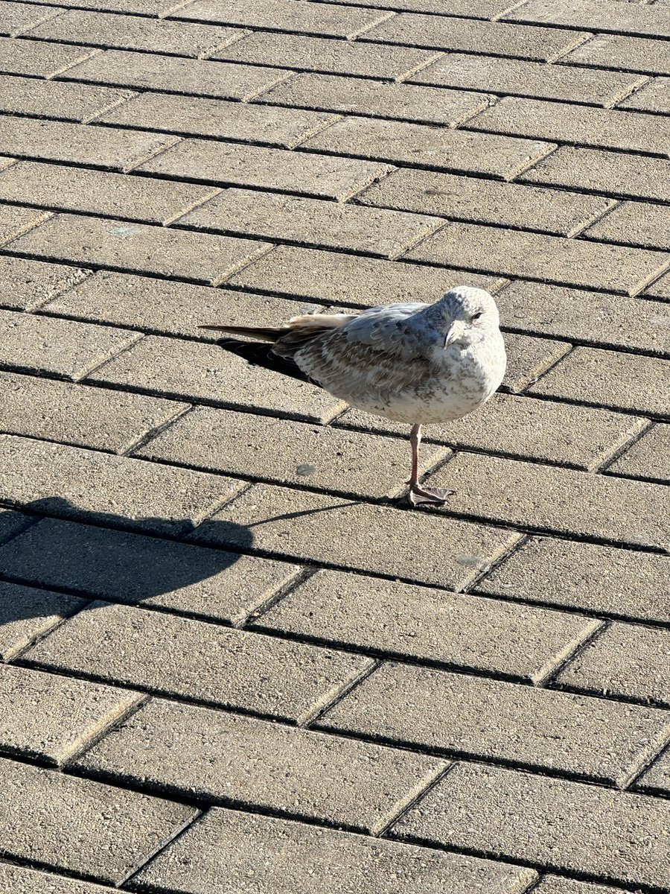

水母雨🍥
@ena1_mizuki
@k0taka_ 鸟类大多都会金鸡独立吧，我家养的文鸟时不时也会单脚站，大概只是站累了让一只脚歇歇



𝙺𝚘𝚝𝚊𝚔𝚊
@k0taka_
之前看到一只海鸥只有一只腿（p1-3）我还在感叹生命的顽强，然后这个月回到纽约又看到一只（p4）感觉特别奇妙，以为还是它，拍了一张照仔细一对比发现一只是左脚一只是右脚…
上小红书查了一下，发现不只是海鸥，有许多海鸟都会选择单脚站立，人家只是为了保暖………. https://t.co/JhPyVJ59L9